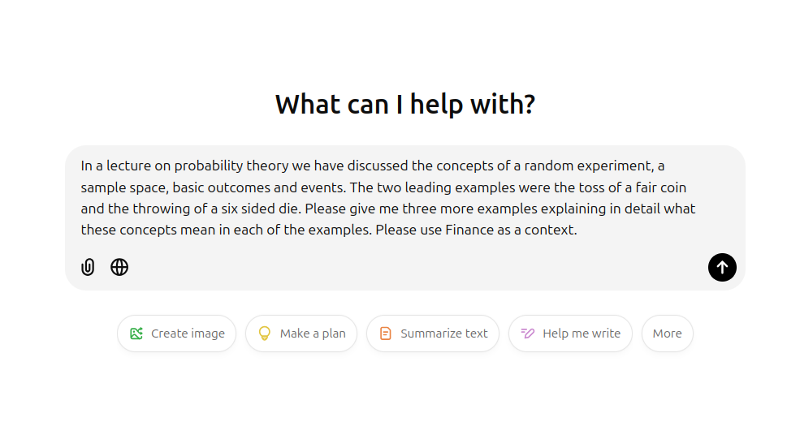
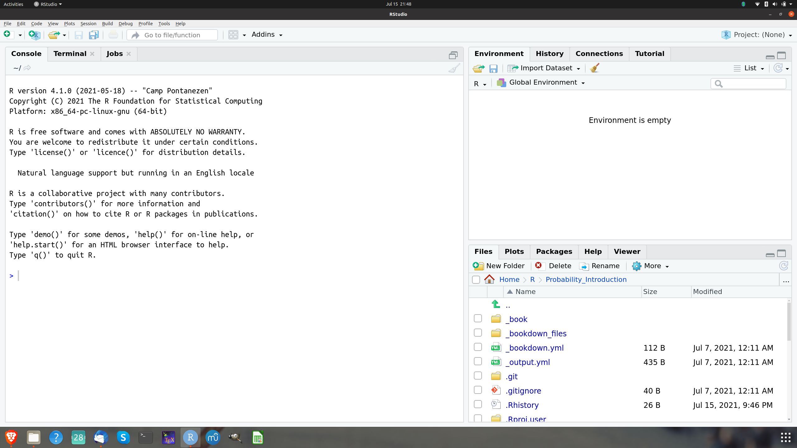
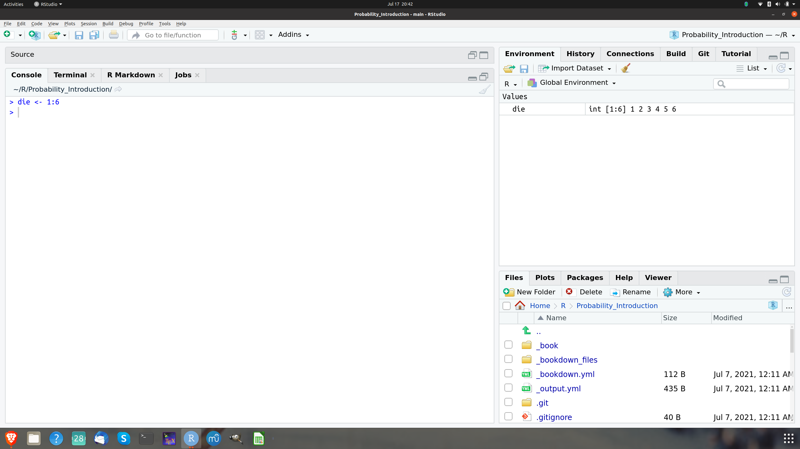
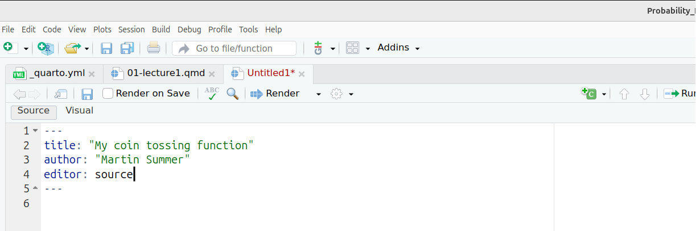
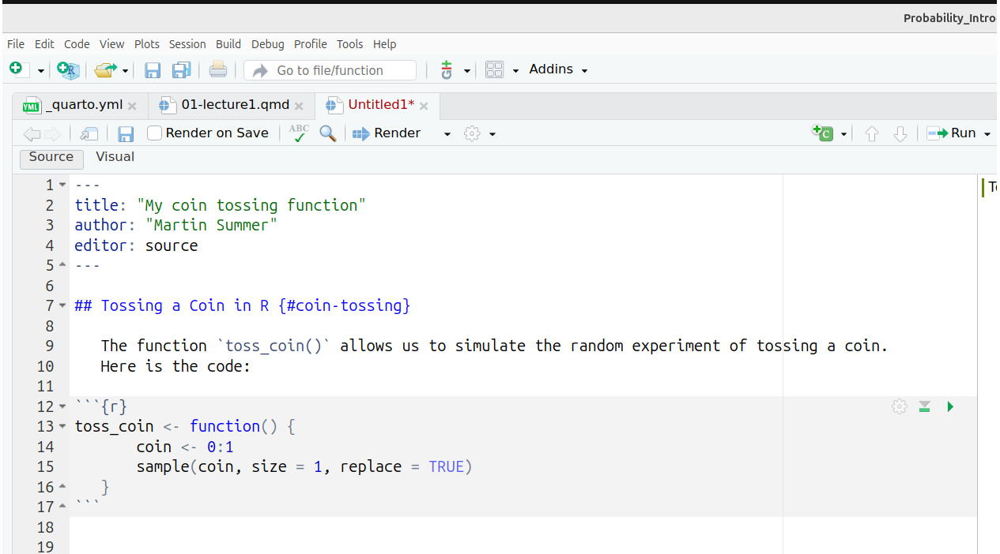
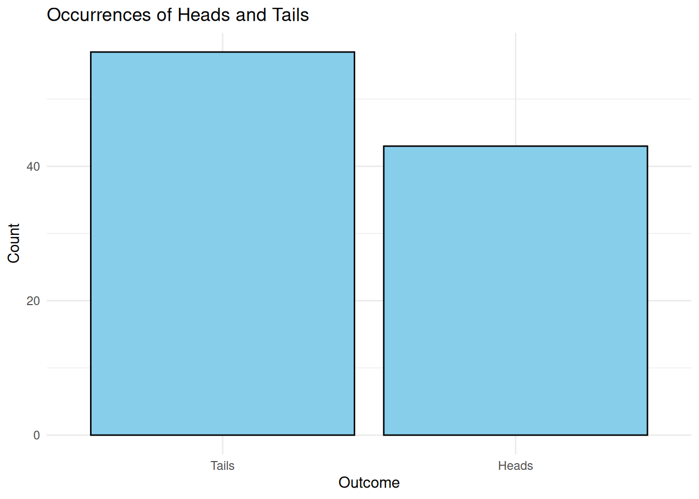
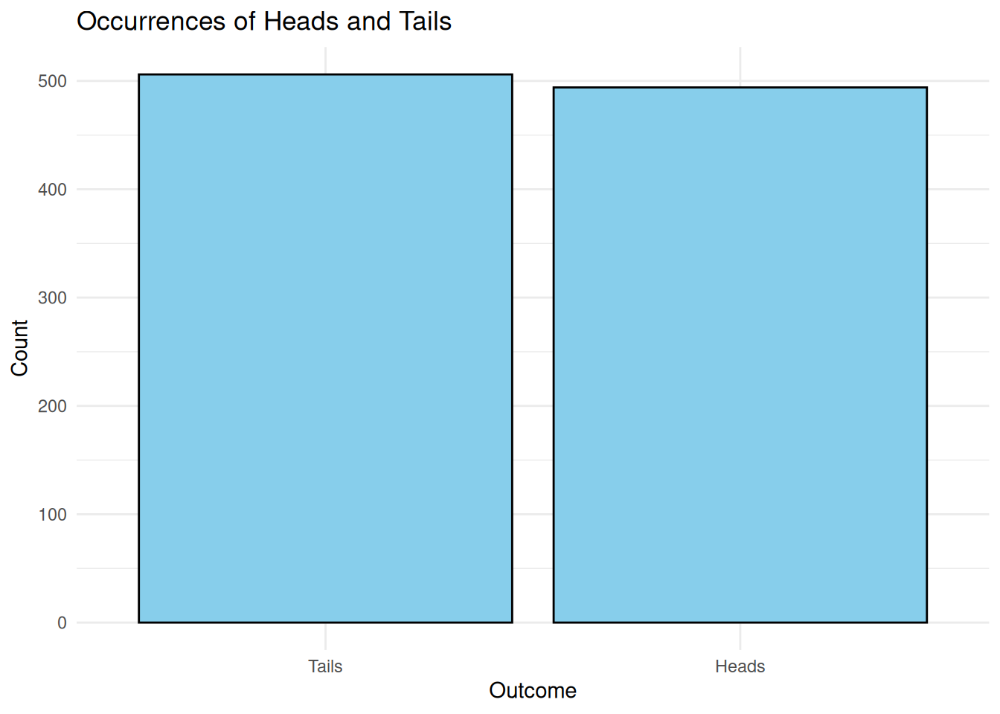
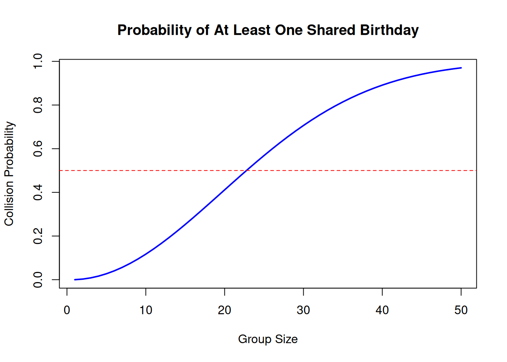
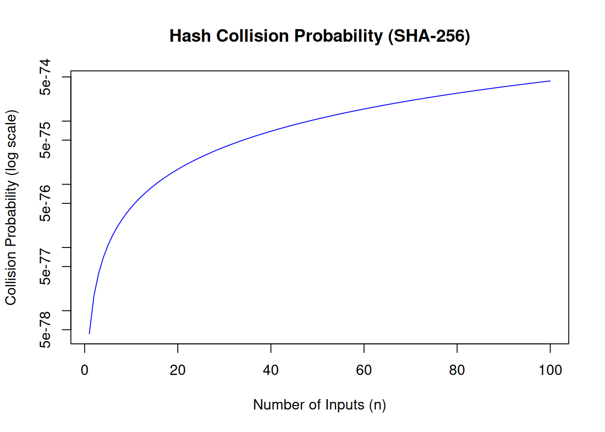

1 First probability ideas and first steps in R
Finance inherently involves uncertainty and risk, making the study of probability essential. At its core, Finance focuses on allocating and pricing money over time, requiring tools to quantify and manage these uncertainties. For example, saving allows you to defer consumption for future purchases, while borrowing enables investment today, with repayment tied to future project revenues. Yet, the future is uncertain and inherently unpredictable.
In Finance, risk and uncertainty are unavoidable. Probability provides the most fundamental framework to quantify, analyze, and manage these challenges. Probability theory equips us with tools to quantify and manage uncertainty, making it a cornerstone of financial decision-making. Every serious Finance student should study probability early in their education.
Probability began as a mathematical theory, gaining practical value through real and conceptual experiments. Its origins trace back to 16th and 17th century Europe, where scholarly debates about gambling engaged some of history’s greatest minds, including Cardano, Pascal, Fermat, and Bernoulli.
Although humans have always been aware of chance—gambling and even venerating a goddess of chance—it was only much later that they considered measuring uncertainty mathematically. This is the starting point for classical probability.
It is also a very good starting point to familiarize ourselves with some basic concepts and knowledge of R by building a simple chance process people apparently had used at all times: Tossing a coin. We will learn how to toss a coin using the computer.
What does tossing a coin have to do with Finance? Consider this thought experiment: Imagine you are deciding to invest in a stock with an equal chance of increasing or decreasing in value. Simulating a coin toss on the computer, where heads and tails have equal chances, provides a simple yet powerful example. It introduces us to probability and R simultaneously. By linking this example to a financial scenario—such as a stock investment—we also begin connecting probability and R to computational Finance.
1.1 Tossing a fair coin: First Probability ideas.
Lets start with a classic and basic example of a probability model: Tossing a fair coin. When probability theorists talk of a fair coin they mean that the coin has equal chances of coming up heads as coming up tails. When the coin is tossed it is uncertain whether it will ultimately come up Heads or Tails.
Figure 1.1 visualizes such a process.
1.1.1 Random experiments, sample space, events
In the theory of probability a process leading to an uncertain outcome is called a random experiment. The example of tossing a coin helps us to give a precise meaning to the notion of an uncertain outcome. While we can imagine in principle that the coin lands on its rim and this is one outcome, we agree on the outset that we are going to consider the (practically relevant cases) that it will land on one of the faces.
The collection of all possible outcomes of a practical or conceptual random experiment is called in probability theory a sample space. While the sample space of tossing a coin is an idealization it is exactly this idealization which simplifies the theory without affecting its applicability. The basic outcomes in the random experiment of tossing a coin are that the die lands such that the upward showing face shows Heads or Tails. Let us encode this outcome by 1 for “Heads” and 0 for “Tails”. In the theory the collection of basic outcomes is denoted as a set. Thus the sample space of tossing a coin is given as the set \({\cal S} = \{1,0\}\).
The sample space \({\cal S}\) is the set of all basic outcomes, which are in our case only two: 1 or 0.
In more complex random experiments there will usually be more than two outcomes. Subsets of the sample space containing more than one basic outcome are called events in the theory of probability.
Now you try
Consider another random experiment from games of chance: Throwing a six sided die. What are the basic outcomes in this random experiment? What is the sample space in this case? How would you describe the event that the outcome of the die shows an odd number in terms of a subset of the sample space? Consider yet a new random experiment where you throw two coins, instead of one. What are the basic outcomes in this random experiment? What is the sample space in this case? How do these concepts look like when you throw two six sided dice instead of two coins?
1.1.2 The role and nature of idealizations in applications
Idealizations of the kind we discussed for the toss of a coin are standard in probability and we will encounter them again and again. For example the movement of a stock price is often though of as a conceptual random experiment. When we try to agree on what is the appropriate sample space of this experiment, we can say that the price can not fall below 0 but it is hard to agree on what will be the highest possible price. In the probabilistic treatment of stock prices, which we will discuss later in our course, it is for instance common to assume that the sample space of this random experiment is the entire interval of non-negative real numbers \({\cal S} = [0, \infty)\).
Many of us would hesitate to claim that the price might rise without bound. Yet many models in applied Finance are based on such an assumption. The models allow arbitrary price hikes but with arbitrary small probability as the price gets higher and higher. Practically it does not make sense to believe that a security price can become arbitrarily high. The use of arbitrarily small probabilities in a financial model might seem absurd but it does no practical harm and makes the model simple and convenient to use. Moreover, if we seriously introduced an upper bound on a security price at \(x\) it would be also awkward to assume that it is impossible that it could be just a cent higher, an assumption equally unappealing than assuming it can get in principle arbitrarily high.
1.1.3 Classical Probability: Measuring uncertainty
Probability is a measure of how likely an event of an experiment is. But how could we measure chance? Here is the first big idea of probability theory and how the originators thought about it.1 How do you measure anything? If you think of length, for example, you take an arbitrary standard you agree on and then count. The originators of probability theory pursued the same idea with chance: To measure probability you choose equally probable cases and then count.
1 In this discussion I use chapter 1 in Diaconis and Skyrms (2019)
The probability of an event \(A\) according to the originators of the theory of probability is then \[\begin{equation} P(A) = \frac{\text{Number of cases where $A$ occurs}}{\text{Total number of cases}} \end{equation}\]
Thus, if we want to know the probability of the coin ending up Heads, we have to compute according to this notion \(1/2\), since the total number of cases is 2 (Heads or Tails).
Now you try
Consider another random experiment of throwing a six sided die: According to the probability notion explained above what would be the chance that the die lands on on a face such that an even number is shown?. What would be the chance that in the random experiment of throwing two dice the sum of points would be 7? What is the chance that when rolling two six sided dice the sum is 2?
Note that this classical notion of probability has a few interesting consequences, which we will discuss in more detail later but which already now naturally flow from this basic idea of measuring chance.
- Probability is never negative.
- If an event \(A\) occurs in all cases \(P(A)=1\).
- If \(A\) and \(B\) never occur in the same case, then \(P(A \,\text{or}\, B) = P(A) + P(B)\).
While rule 1. and 2. are intuitively fairly obvious (try to think of examples to convince yourself!), rule 3 might need some concrete explanation. The case described by rule 3 is often referred to as mutually exclusive events, i.e. they can not occur together.
Example for rule 3:
Suppose you have a standard deck of 52 playing cards, and you are interested in the probability of drawing a King \(A\) or a Queen \(B\).
- The probability of drawing a King is \(P(A) = \frac{4}{52}\), since there are 4 Kings in the deck.
- The probability of drawing a Queen is \(P(B) = \frac{4}{52}\), since there are also 4 Queens.
Since a card cannot be both a King and a Queen, \(A\) and \(B\) are mutually exclusive events.
Thus, the probability of drawing a King or a Queen is: \(P(A \,\text{or}\, B) = P(A) + P(B) = \frac{4}{52} + \frac{4}{52} = \frac{8}{52} = \frac{2}{13}\)
This illustrates how probabilities of mutually exclusive events add up.
In particular then the probability that an event does not occur is 1 less the probability that it occurs: \(P(\text{not}\, A) = 1 - P(A)\).
Now let me show you how you can make use of a large language model, using ChatGPT as a use case, to support learning new concepts such as we have just introduced them here.
We have discussed new two classical and famous random experiments you will probably find in every textbook on probability. Assume you would like to deepen your understanding of these concepts and also consider more complex examples in particular from Finance. This is something the LLM is very good at. You could - for instance - ask ChatGPT at the prompt something like shown in Figure 1.2 :

Here is an answer I would get for this prompt:
Answer by ChatGPT40
Here are three detailed examples from finance to illustrate the concepts of a random experiment, sample space, basic outcomes, and events:
Example 1: Daily Price Movement of a Stock
Random Experiment: Observe the daily price movement of a particular stock (e.g., Apple Inc.) at the close of the trading day.
Sample Space \({\cal S}\): The set of all possible outcomes of the price movement. For simplicity, we can represent the sample space as: \({\cal S} = \{ \text{price increase, price decrease, no change} \}\)
Basic Outcomes:
- “Price increases” (e.g., the stock closes higher than it opened).
- “Price decreases” (e.g., the stock closes lower than it opened).
- “No change” (e.g., the stock closes at the same price it opened).
Events:
- Event \(A\): “The stock price increases.” \(\{ \text{price increase} \}\)
- Event \(B\): “The stock price either increases or remains unchanged.” \(\{ \text{price increase, no change} \}\)
Example 2: Credit Card Default Risk
Random Experiment: Assess whether a randomly selected credit card holder defaults on their monthly payment.
Sample Space \({\cal S}\):
\(S = \{\text{default, no default} \}\)
Basic Outcomes:
- “Default” (e.g., the cardholder fails to make the minimum payment).
- “No default” (e.g., the cardholder pays at least the minimum required).
Events:
- Event \(A\): “The cardholder defaults.” ({default})
- Event \(B\): “The cardholder does not default.” ({no default})
- Event \(C\): “Default occurs for a customer from a specific demographic (e.g., under 30 years old).” This is a subset of the sample space but is conditioned on additional information.
Example 3: Bond Ratings Transition
Random Experiment: Observe the change in the credit rating of a corporate bond over a year.
Sample Space \({\cal S}\): The set of possible credit rating transitions. For example, using a simple rating scale: \({\cal S} = \{\text{AAA}, \text{AA}, \text{A}, \text{BBB}, \text{BB}, \text{B}, \text{CCC}, \text{default} \}\)
Over a year, the bond can transition from its initial rating to any of these, or stay the same.
Basic Outcomes:
- “AAA to AAA” (no change in the highest credit quality).
- “BBB to BB” (downgrade).
- “A to default” (significant deterioration).
Events:
- Event \(A\): “The bond is downgraded by one or more notches.” (Any outcome where the final rating is lower than the initial rating, e.g., {AAA to AA, A to BB}).
- Event \(B\): “The bond defaults.” ({default}).
- Event \(C\): “The bond remains investment-grade.” (All transitions where the final rating is AAA, AA, A, or BBB).
These examples show how the concepts apply to finance, helping to bridge the theoretical framework of probability with practical applications in the field. Would you like to dive deeper into any of these examples or extend them to computations like probabilities of events?
Let us interrupt here our discussion of probability for a moment and ask how we can make good on our promise to make these ideas tangible, so we can play with them.
For this we will need the computer. Since we will talk to the computer in R, it is now the right time to look at the die rolling example from the perspective of R and dive into some of its basic concepts.
1.2 Tossing a coin on the computer: First steps in R
1.2.1 The R User Interface
Before we can ask our tool to do anything for us, we need to know how to talk to it. In our case RStudio allows us to talk to our computer. It works like any other application. When you launch RStudio on your computer, in figure Figure 1.3 you see a screen looking like this:

In this picture you see a screenshot of my RStudio screen. Interacting with the app is easy. You type commands via your keyboard at the prompt, which is the > symbol. You find this symbol in the RStudio pane called Console. You can see it in the left pane in the screenshot. You send the command to the computer by pressing enter. After you have pressed enter, RStudio sends the command to R and displays the result of your command with a new prompt to enter new commands, like this:
1+1[1] 2Let me pause to explain what you see here in this code example. First you see a light-gray box containing the command 1+1. This is an instance of a so called code chunk. Moving the cursor to the right upper corner of the chunk, will display a copy icon and you can click this icon to copy the code to the computer’s clipboard and then paste it at the prompt of your console (or for that matter anywhere else) and run it in R studio, if you wish. In the code-chunk the R-prompt > is not displayed. This symbol of the prompt is only shown in the Console itself.
The [1] means that the line begins with the first value of your result. For example, if you enter the command 20:60 at the prompt of your console which means in the R language, “list all the integers from 20 to 60” and press enter you get:
20:60 [1] 20 21 22 23 24 25 26 27 28 29 30 31 32 33 34 35 36 37 38 39 40 41 42 43 44
[26] 45 46 47 48 49 50 51 52 53 54 55 56 57 58 59 60meaning that 20 is the first value displayed in your result. Then there is a line break because not all values can be displayed on the same line and R tells you that 45 is the 26-th value of the result.
The colon operator : is a very useful function in R which we will need often. It allows us to create sequences of every integer between two given integers.
R needs a complete command to be able to execute it, when the return key is pressed. Lets see what happens, if a command is incomplete, like for instance > 5*.
In this case R will show the expression followed by a + instead of showing a new prompt. This means that the expression is incomplete. It expects more input. If we complete the expression, say like
> 5*
+ 4the expression can be evaluated and a new prompt is shown in the console.
If you type a command that R does not understand, you will be returned an error message. Don’t worry if you see an error message. It just is a way the computer tells you that he does not understand what you want him to do.
For instance, if you type 5%3 you will get an error message like this
> 5%3
Error: unexpected input in "5%3"
>Sometimes it is obvious why a mistake occurred. In this case, that R just does not know what to do with the symbol %. It has no meaning in this context. Sometimes it is not so obvious what the error message actually means and what you might do about it.
A useful strategy in this case is to type the error message into a search engine and see what you can find. The chance is very high that others encountered the same problem before you and got helpful advice how to fix it from other users on the internet. One site, we find particularly helpful for all kinds of questions related to R and R programming is https://stackoverflow.com/. Try it at the next opportunity. You can also show the error to the LLM prompt and ask how to fix it. In most cases chatGPT will give you a useful answer.
Now with this basic knowledge, we can already make the first step to create a coin on the computer using R. If you think of a physical coin, the essential thing that matters is that it can show Heads or Tails. Lets encode Heads by 1 and Tails by 0. If you toss the coin it will usually land on one of these faces and the upward showing side of the coin shows the outcome of the toss. The colon operator : gives us a way to create a group of numbers from 0 to 1. R gives us the result as a one dimensional set of numbers.
0:1[1] 0 1Lets use these first steps in R to recap the probability concepts we have learned using this example of the six sided die: A basic outcome of tossing the coin is for example 1 if the upper side after tossing the coin happens to be Heads. The sample space of the experiment of tossing a coin is the set \({\cal S} = \{0,1\}\). In probability theory we often use the symbol \({\cal S}\) or \(S\) for sample space. In many probability texts the sample space is also often denoted by the symbol \(\Omega\) the Greek letter for (big) Omega. A random experiment in this example is the tossing of the coin. The outcome is uncertain but once the coin is tossed the outcome can be determined precisely. The event that the outcome is a display of 2 is the empty set \(A = \emptyset\). The symbol \(\emptyset\) comes from set theory and means the set containing no elements. This event can contain no elements because we can not get any other number than 0 or 1 by tossing the coin.
1.2.2 Objects
You can save data in R by storing them in objects. An object is a name, you can choose yourself to store data. For example, if you choose to store the value 1 in an object called Heads, you would type:
Heads <- 1at the prompt. R will the store the value 1 in the object called Heads, which you can use to refer to the value. If you type the name of your object at the prompt, R will display the value you have assigned. A useful key combination for typing the assignment operator <- is to use the key combination ALT _. At the R prompt R will automatically print an assignment operator.
Now if you type the name of the object and press enter, R will display the value or values stored in it, like this:
Heads[1] 1Now you can use the name of the object to refer to its value. For instance, you could divide Heads by 2 and get a meaningful result
Heads/2[1] 0.5Now to make our coin more tangible and useful, let us store it in an R object by typing the following command at the prompt. This command creates an object with name coin and assigns the vector 0,1 to it.
coin <- 0:1

You can now see in the right upper Environment pane in figure Figure 1.4 that R shows you that there is an object with the name coin that it consists of integers 0,1. As you create more objects they will be stored in the Environment pane and are ready for your reference, unless you delete them. You can remove or delete an object by typing rm(object) or by assigning the value coin <- NULL which would also remove the object from your environment or workspace.
You can name your objects almost anything with a few exceptions. An object name must not start with a number. There are some special symbols which can also not be used in object names, like ^, !, $, @, +, -, /, *. Note that R is case sensitive and distinguishes small and big letters. If you assign a new value for an object you have already created, R will overwrite the object without warning.
You can see which objects are currently created and available for you in the Environment pane of your session of by typing ls(). The UNIX users among you will recognize this command from the unix shell, where it displays the files in a directory.
Before we learn how we can actually roll our die and perform a random experiment with it, let us briefly use the opportunity to explain a few things about how R does computations. We have already explained that we can use the object name to refer to the value. So for instance if we type
coin*coin[1] 0 1This might irritate some of you because we have called the object a vector. In linear algebra multiplication of vectors is only allowed if there is an inner product. What happens here, if we use * the multiplication operator is that R does an element-wise multiplication of the six numbers of our die. Of course R allows to take an inner product as well, but this needs a different operator. To compute an inner product, we would type
coin %*% coin [,1]
[1,] 1Now R displays the result as a vectors with one row and one column, which is denoted in the output by [ , 1] for the column and [1, ] for the row. We will learn later more about the use and the meaning of this notation in R.
The element wise execution R usually uses also means that when you, for example type
coin + 1[1] 1 2R would subtract 1 from every component in the vector coin.
Another specific behavior of R, you need to know about is called recycling. If you give R two vectors of different length in an operation, R will repeat the shorter vector as long as it is of equal length with the longer one. For example, if you have:
coin + 1[1] 1 2you see that R adds 1 to 0 and then starts over again by adding 1 to 1.
If the longer vectors is not a multiple of the shorter one, R recycles but the cuts off.2
2 As of R version 4.2.0 (released in April 2022), the behavior regarding the recycling rule has changed. In older versions of R, a warning was issued when the length of one vector was not a multiple of the length of the other vector during arithmetic operations. The reasoning behind this change was to reduce unnecessary noise in the output. Many users found the warnings redundant in cases where the recycling rule was intentional and understood. However, this change means you need to be more cautious, as unexpected behavior might go unnoticed without the warning.
coin + 1:4[1] 1 3 3 5While this might seem awkward to some of you, we will see that for data manipulation element-wise execution is often extremely useful. It allows to manipulate groups of values in a systematic yet easy way.
1.2.3 Functions
R contains many functions which we can use to manipulate data and compute things. The syntax for using a function is very simple: You type the function name and put the value of the function argument in parentheses. Here we use for illustrations the function of the square root sqrt():
sqrt(4)[1] 2or rounding a number:
round(3.1415)[1] 3The data you write in the parentheses are called the function arguments. Arguments can be all sorts of things: raw data, R objects, results from other functions.
If functions are nested, R evaluates the innermost function first and then goes on to the outer functions. To see examples of all these instances you can take
numbers <- 1:7
mean(numbers)[1] 4round(mean(numbers))[1] 4for example.
For simulating random experiments, R has the very useful function sample(). With this function we can - for example - toss a coin on the computer and conduct actual random experiments.
The function takes as arguments a vector names x and a number named size. sample will return size elements randomly chosen from the vector x. Lets say:
sample(x = 0:1, size = 1)[1] 0In this case sample has chosen either 0 or 1 from the vector x = (0,1) at random.
If we want to toss the coin in our computer we can thus pass the coin as an argument to sample and use the number 1 for the size argument. Lets do a few tosses with our die
sample(x = coin, size = 1)[1] 1sample(x = coin, size = 1)[1] 1sample(x = coin, size = 1)[1] 0sample(x = coin, size = 1)[1] 1These are the random outcomes of our consecutive tosses. It is as if we had thrown an actual coin but in this case we have done the same thing on the computer. Isn’t it cool that this is possible at all? The sample() function will remain our good friend throughout this course.
R functions can have many arguments, but they need to be separated by a comma.
Every argument in every function has a name. We specify which data are assigned to the arguments by setting a mathematical equal sign = between the name and the data. Names help us to avoid passing the wrong data and thereby mixing up things or committing errors. But using names is not necessary. If we just wrote
sample(coin,1)[1] 1R would also know what to do. It is not always clear which names to use for a function. If you are not sure, you can use the function args() to look it up. Here we take the function roundas one example.
args(round)function (x, digits = 0, ...)
NULLNote that the digits argument in the round function is already set to 0. Frequently R functions come with optional arguments. These arguments are optional because the come with a default value, which is 0 in case of the round function.
We recommend that you write out argument names as a rule. It gives clearer code and avoids errors. If you don’t write argument names, R matches your values to the arguments of the function by order.
1.2.4 Writing your own functions
Now we are ready to write our own function to toss the coin in our computer. Each function in R has the same elements: A name, a function body of code and a set of arguments. To write your own function, you have to write up all of these parts and save them in an R object. The syntax is:
my_function <- function() {}
The name here is my_function, next comes the expression function() which needs to be assigned. The names of the function arguments have to be written between the parentheses. Then we have to write the actual code within the braces {}.
To do this for the die, lets write a function named toss_coin.
toss_coin <- function(){coin <- 0:1
sample(coin, size = 1)}Now we can toss our coin for a few times to show how the function works
toss_coin()[1] 1toss_coin()[1] 0toss_coin()[1] 0toss_coin()[1] 0toss_coin()[1] 1Note that in our function toss_coin() has no arguments, just the function body. This is perfectly legitimate in R. It is important that when we call the function we have to call it with the parenthesis like toss_coin(). If we only call the name toss_coin, R will display the code in the function body.
A final remark in the sample function is in place here. If we look at the arguments of sample using the args function we see
args(sample)function (x, size, replace = FALSE, prob = NULL)
NULLLets do not discuss all the details of this output but concentrate for a moment on the replace argument. What does this mean?
As we saw previously we can use the sample function to model the rolling of our die. If we set the size argument to 1 we get the toss of one coin. If we set the size argument to n, we would simulate the tossing of n coins. But now the replace argument becomes crucial. As we can see in the output of the args function replace has a default value FALSE. This is a logical argument. It tells R, for example, that if we set size = 2, meaning that two coins are tossed, if the first coin shows, say Heads - a value of 1- the coin die cannot show Heads as well.
This is clearly not what we have in mind when we model the tossing of two coins. It should be possible that both coins show the same value. To enable this behavior of the sample function, we have to change the default value of the replace argument to TRUE. Then R chooses a random draw from all of the six possible values for all dice rolled.
Congratulations ! You have written your first R function for conducting a simple random experiment. Let me remind you once again: Think of the parentheses as a trigger that tells R to run the function. If you omit the trigger R just prints the body of the function. When you run a function, all the code in the function body is executed and R returns the result of the last line of code. If the last line of code does not return a value neither will R.
Now you try
Consider another random experiment of throwing a six sided die. Use the concepts learned in this section to write a function which simulates the rolling of a six sided die. Write a function to simulate the throwing of two dice. Think about how to set the replace argument in the sample function in this case. Use R’s help function to learn about the role of the replace argument. Alternatively ask the LLM to explain the use of replace in R’s sample function. You can also ask for examples or demonstrations what goes wrong when this argument is parametrized in the wrong way.
1.2.5 Arguments
Imagine we remove the first line of code in our function body and changed the name die in the sample function to “ball”.
toss_coin2 <- function(){sample(ball, size = 1)}If we call the function now, we will get an error. The function call roll_die2() will result in the error message Error in sample(ball, size = 1) : object 'ball' not found (try it!)
We could supply ball when we call toss_coin2 if we make ball an argument of the function. Lets do this:
toss_coin2 <- function(ball){sample(ball, size = 1)}Now the function will work as long as we supply ball when we call the function.
toss_coin2(ball = 0:1)[1] 1Note that we still get an error, if we forget to supply ball argument. This could be avoided if we give the function a default argument
toss_coin2 <- function(ball= 0:1){sample(ball, size = 1)}Now if we type:
toss_coin2()[1] 0everything works, just as intended.
1.2.6 Scripts
So far we have worked by interacting with the console. But what if you want to edit your functions? It would be much easier, if you could use a draft of your code and work form there. This can be done by using a script.
You create a script by going to File > New File > R script in the menu bar of RStudio. Using scripts is the standard way to write code in R. It not only helps you to keep track of your code, save it and edit it later. It also makes your work reproducible. You can edit and proofread your code and share it with others. To save your script go to File > Save As in the menu bar.

RStudio has many useful features to help you work with scripts. You can for instance automatically execute a line in a code by using the run button. You can also execute sections of code or the entire script. The entire script is executed by running the Source button. For all these commands there are key short cuts which you will learn as you work more with RStudio and R.
From now on you should write all your R-code for this course in scripts. Make a new folder for the scripts you write and store your R-code there from now on.
1.2.7 Using Quarto Documents
Quarto documents provide an elegant way to combine explanatory text, R code, and the resulting output in one cohesive file. This makes them especially useful for documenting your learning process, conducting reproducible research, or preparing assignments.
Let’s walk through how to use a Quarto document to write down and experiment with your coin-tossing function.
- Creating a New Quarto Document: To begin, create a new Quarto document in RStudio by navigating to
File > New File > Quarto Document.... You will see a popup window allowing you to type a title for the document and your name. It also allows you to select a format for your document. Choose theHTMLformat for now, as it allows easy preview in your browser, and click theCreatebutton The popup window will look something like this:
- Understanding the Quarto Layout: The new Quarto document will have a YAML header at the top, which might look like this:

Below this header, you will see some example text and R code chunks. Replace the example content with your own text and code.
Adding the Coin Tossing Function: In your Quarto document, you can explain your approach to creating the coin-tossing function, and include the code in a code chunk.
Here’s an example:

Running and Compiling the Document: Once you have written your text and code, save your document. You can execute the R code directly within the Quarto document. To run a code chunk, click the green play button in the upper-right corner of the chunk or use the shortcut
Ctrl + Shift + Enter(Windows) orCmd + Shift + Enter(Mac).After executing your code, you can compile the document into a readable output format by clicking the
Renderbutton or using the shortcutCtrl + Shift + K(Windows) orCmd + Shift + K(Mac).
There is of course a lot you can do to enhance your quarto documents. For example the lecture notes you are reading now are all written and composed in quarto as are the lecture slides.
By using Quarto documents, you can create well-documented, interactive code files that are both functional and easy to share with others. You can use quarto indpendently from R and combine it with other languages like phyton or julia. Ceck out: https://quarto.org/
1.2.8 Using packages and finding Help
We have now a function which we can use to simulate the tossing of a coin, coin_toss(). If the coin is fair it should be the case that if we toss the coin often, Heads and Tails should occur about equally often. The coin should not be weighted in favor of a particular value.
One way to learn whether our coin is fair are repetition and visualization. These are tools we will need all the time, when working with data and when doing probability. While R has many useful functions, one of the great powers is that R is constantly extended by a huge community of users by providing packages.
Packages are add on functions, which will not be available when you install R. They need to be installed and loaded before you can use them. Since packages are such a powerful tool in R we need to introduce what they are and how to use them in the beginning.
1.2.9 Packages
There are many visualization tools in R that come with the basic installation. Since the point we want to make here is about packages, we will use a visualization function which is part of the add on package ggplot2, a very popular package for making all kinds of graphs. ggplot2 is not part of the base-R distribution. It has to be therefore loaded before we can use it.
There are many additional functions provided with this package. Indeed you could run a whole course on just that 3
Since we want to use functios now which are not in the base R distribution. we need to load the package which provides the functions we want. In this example we use the package ggplot2.
When we use a package for the first time it needs to be installed. Once installed it does not have to be reinstalled when we use it at later coding sessions again.
To install a package you need to be connected to the internet. If you have internet connection go to the command line and run at the command line: install.packages("ggplot2").
R displays what is happening while executing the command. Don’t worry if you don not know what all of these messages exactly mean and don’t panic that they are displayed in red. All packages can be installed like this. You have just to enter the correct name in the function install.packages(). The lower right pane in the RStudio software alternatively provides a tab called Packages. Using this tab, you can also install R packages interactively by clicking the install button on the upper left corner of the Packages tab.
After installation the package is on our hard-drive but it can not yet be used. To use the package it has to be loaded. This is done with the command library. To load the ggplot2 package we type
library("ggplot2")and hit the return key. Many things could be said about the R package system and you will learn it in more detail as we go along in our course. For the moment the most important thing to remember is that a package needs to be newly loaded whenever you want to use it in a new R session.
To check whether our coin is fair, we need to toss it many times. R provides a function, that does this for us. This function is called replicate() and provides an easy way to repeat a command many times. The number of times we want to repeat something is given as an argument to the replicate function.
Now lets roll our die 100 times and save the result in an object we call tosses:
set.seed(123)
tosses <- replicate(100, toss_coin())The function set.seed() I used here with the argument 123 is just a device to make this experiment reproduceable. If this function is not used, each new run of the 100 replications would show a different outcome.
I now show you a code for visualizing this outcome. The code contains some concepts that we did not yet discuss. Don’t worry. We will learn them soon. The point here is to shwo you how we use the functions of the package to produce a visualization of the outcome of our 100 coin tosses.
# Create a data frame for plotting
tosses_df <- data.frame(
Outcome = factor(tosses, levels = c(0, 1), labels = c("Tails", "Heads"))
)
# Plot the results using ggplot2
ggplot(tosses_df, aes(x = Outcome)) +
geom_bar(fill = "skyblue", color = "black") +
labs(
title = "Occurrences of Heads and Tails",
x = "Outcome",
y = "Count"
) +
theme_minimal()
It looks like every value occurred roughly 50 times but there is still quite some variation. Tail occured fewer times than Heads.
Maybe we have to give it another trial with more replications. With the computer we can do this with a fingertip. Let us roll our die 1000 times and plot the result.
Here is how we would code this by recycling the code used before.
set.seed(123)
tosses <- replicate(1000, toss_coin())
# Create a data frame for plotting
tosses_df <- data.frame(
Outcome = factor(tosses, levels = c(0, 1), labels = c("Tails", "Heads"))
)
# Plot the results using ggplot2
ggplot(tosses_df, aes(x = Outcome)) +
geom_bar(fill = "skyblue", color = "black") +
labs(
title = "Occurrences of Heads and Tails",
x = "Outcome",
y = "Count"
) +
theme_minimal()
Now it looks much better: Each face comes up approximately 500 times. We will learn in our course why the picture get better as we increase the number of rolls of the die. For the moment, let us just state that at least for this case it seems that there is no significant visual evidence that our virtual die is loaded.
But wait a minute. We have introduced the idea of classical probability by constructing equally probable cases and then count. Here we have repeated a random experiment over and over again to draw some conclusion on the underlying probabilities by visualizing the frequency polts of outcomes? These ideas are connected. We have just informally introduced a new idea in probability, the relative frequency notion of probability. How the two concepts are related and why this notion makes sense we will learn more formally in the next lecture. For the moment let’s just stick with the idea that practitioners have used at all times to assess probabilities by looking at frequencies of particular events occurring. When and why this kind of reasoning about probability works we learn in the next lecture.
Tip for R novices: How to leverage the LLM to enhance understanding
Let me give you a hint here how you could use the LLM to enhance your learning experience in another way. The students usually taking this bootcamp class have very different backgrounds. Some have much experience with programming but perhaps not necessarily in R. Many of you will - for example - know Python, because most of the MQF is taught and run with Python. In such a case you could use the LLM to translate the R code into Python and then compare.
Or assume you are impatient and want to jump ahead by having somebody explaining you the ggplot2 code we used for the plotting function. Ask the LLM to explain you the R code and what it does, and I assure you you will get a pretty good and well explained answer.
Try it!
1.2.10 Getting Help
We have now learned a tiny number of R functions and we have written one function ourselves. We have learned how to make use of functions provided by packages.
It would be overwhelming to memorize and learn them all. In R, fortunately, every function comes with a detailed documentation and with its own help page. You need to learn how to use this source right from the beginning.
To access the help page of a function you type the function name preceded by a question mark at the prompt, like this
?sampleThen, after you have pressed the return key, a help page is opened in the right lower pane under the help tab as shown in Figure 1.5

This help page has a particular structure that you will find for every other R function no matter whether it is provided by the base installation or by a package. In the upper left corner you see the name of the function (sample) and in curly brackets next to it the term base, which means that this is a function in the R base installation. Then you see a headline about what the function does.
From the top of the page, you then first see the field Description. This is a short description what the function does. Here it says
Description
sample takes a sample of the specified size from the elements of x using either with or without replacement.The next field is Usage. It gives you the function description with the arguments. Here for example
Usage
sample(x, size, replace = FALSE, prob = NULL)
sample.int(n, size = n, replace = FALSE, prob = NULL,
useHash = (!replace && is.null(prob) && size <= n/2 && n > 1e7))
The first line in Usage should by now be familiar. Don’t worry about the second line. The function can obviously do more than we know so far.
Next comes a list of arguments the function takes and what type of information R expects you to provide, as well as what R will do with this information. Here it says for example
Arguments
x
either a vector of one or more elements from which to choose, or a positive integer. See ‘Details.’
n
a positive number, the number of items to choose from. See ‘Details.’
size
a non-negative integer giving the number of items to choose.
replace
should sampling be with replacement?
prob
a vector of probability weights for obtaining the elements of the vector being sampled.
...
We omit some information here.
Then comes a field called Details which gives a more in-depth description of the function. The next field is called Value. It describes what the function returns when you run it. Then we have a reference to related R functions under the field See. Finally there is a field called Examples. This field contains example code that is guaranteed to work. It shows a couple of different cases how you can use the function in practice.
1.3 Application: Coincidences and the Blockchain
1.3.1 The birthday problem
In this section, we will apply our foundational knowledge of probability - which is at the moment just the informal and intuitive notion of counting equally probably cases - to a fascinating real-world problem known as the birthday problem:
The starting question in the birthday problem is: What is the probability that at least two people in a room share the same birthday, when we neglect things like leap years, and when we assume that birthdays on any day of the year are equiprobable and the birthdays of the people in the room are independent. We have no twins for example.
Perhaps some of you have already seen this problem before. If not, the result may surprise you. Even if you saw the birthday problem before, perhaps not many of you are aware that the significance of this problem reaches far beyond recreational math puzzles. This is because the birthday story is of course accidential. The mathematical formulation of the problem will reveal through the process of abstraction that this problem is at the heart a problem about the probability of coincidences. As such it has real world connections to cryptography and the blockchain security.4
4 We follow here the discussion in Diaconis and Skyrms (2019)
Through this problem, we will:
- Explore how to frame probability questions mathematically.
- Use basic R functions to compute probabilities.
- Learn how to simulate experiments to approximate probabilities. This problem is not only an entertaining mathematical puzzle but also a stepping stone to understanding its applications in cryptography and blockchain security.
First, observe that we took our assumptions such that we are in the frame of classical probability like the originators of the field thought about it.
Now for the sake of familiarizing ourselves with the new concepts, let us try to map the birthday problem into the probability notions we learned so far.
The sample space is the set of possible outcomes of the experiment. The sample space for our problem includes all possible combinations of birthdays for the group. For example, if there are 3 people, each with a birthday on any of 365 days, the sample space contains all possible sequences of three birthdays:
\((1,1,1),(1,1,2),…,(365,365,365)\)
In general, for \(n\) people, there are \(365^n\) possible combinations, as each person’s birthday is independent of the others.5
5 Mathematically you can describe the sample space for the birthday problem as a set with \(365^n\) ordered \(n\)-tuples or sequences of birthdays: \({\cal S} = \{x | x \in 365^n \}\) This is the sample space of this experiment, written as in set theoretic notation. It means the sample space is the set of all ordered \(n-tuples\) from the Cartesian product \(365^n\). Remember that in mathematics, a Cartesian product is a mathematical operation that returns a set (or product set or simply product) from multiple sets (in this case the sample space, \({\cal S}\). That is, for sets \(A\) and \(B\), the Cartesian product \(A \times B\) is the set of all ordered pairs \((a,b)\) where \(a \in A\) and \(b \in B\).
Now given this sample space we can assign a probability to the event that two people chosen at random will have the same birthday. The denominator will this be \(365^n\). The nominator for this probability will be much more straightforward to figure out, if we compute the complement. We discussed before that the probability of the complement of an event is 1 minus the probability of the event: \(P(\text{not} A) = 1 - P(A)\).
Let \(A\) denote the event that no two people share the same brithday. We can then use the complement rule to compute the probability of at least two people sharing a birthday: Compute the probability that no two people share a birthday. Subtract this probability from 1 to get the probability of at least one match.
Here’s how we compute the probability of no matches:
- The first person can have any birthday \((365/365)\).
- The second person must avoid the first person’s birthday \((364/365)\).
- The third person must avoid the first two birthdays \((363/365)\).
Now continue this reasoning for \(n\) people.
The final probability is:
\[\begin{equation*} P(\text{at least two people share birthday}) = 1 - \frac{365 \times 364 \times 363 \cdots \times 365 - n +1}{365^n} \end{equation*}\]
Now there is an additional thing we did not yet introduce and which we will learn about in the next lecture. This refers to our assumption that the individual birthdays are independent. For the moment you need to take the following fact on faith: The probability of independent events is the product of the probability these events.
Now comes the surprise for those of you who did not already see the birthday problem. Assume the group size of people is 23. Let us compute the birthday coincidence probability. For this computation we make use of the R function prod() which takes a vector of numbers as input and computes their product. For \(n=23\) we need the list of numbers from 365 to 343. Now we can use the : operator and take advantage from one of its cool properties. If we formulate the command as 365:343 then the colon operator will give us a descending list of integers starting at 365 and ending at 343. Then the probability can be computed as
1 - prod(365:343)/365^23[1] 0.5072972We have used the operator ^ which is needed to compute powers. Now we see from our computation that with 23 people the probability is already larger than 50 %. Quite stunning. You can now verify yourself that with 50 people this probability is already at 97 %.
Let’s visualize how the probability of at least one shared birthday grows with the size of the group. This time I will use base R’s plotting functionality and not use the ggplot2 package.6
6 I used ggplot2 before to explain the concept of a package and how to load it to enhance R’s functionality. Base R containts a lot of powerful plotting functions which work independently of gglot2.
The plot below shows that the probability exceeds 50% with just 23 people and quickly approaches 100% as the group size increases.
# Define the birthday_collisions function
birthday_collisions <- function(n) {
1 - prod(365:(365 - n + 1)) / 365^n
}
# Generate data for group sizes
group_sizes <- 1:50
collision_probs <- sapply(group_sizes, birthday_collisions)
# Plot the probability of at least one shared birthday
plot(group_sizes, collision_probs, type = "l", col = "blue", lwd = 2,
xlab = "Group Size", ylab = "Collision Probability",
main = "Probability of At Least One Shared Birthday")
abline(h = 0.5, col = "red", lty = 2) # Highlight the 50% threshold
I will not go in detail into the explanation of the code at this stage. For those of you who crave for an explanation, please look at the marginal note here or use the LLM for a step by step explanation.7
7 birthday_collisions Function: This function calculates the probability of at least one shared birthday for a group of nn people using the formula derived earlier. group_sizes and collision_probs: group_sizes defines a range of group sizes (1 to 50). sapply applies the birthday_collisions function to each group size, computing the collision probabilities. Visualization: A line plot (type = "l") is used to visualize how the collision probability increases with group size. A horizontal red dashed line (abline) highlights the 50% threshold for better visual context.
1.3.2 Determining birthday collisions by simulation
Instead of deriving the probability analytically, we can simulate the birthday experiment if we use the relative frequency notion of probability which we informally had used in our visualization of coin tosses. Here’s how:
- Generate random birthdays for nn people using
sample(1:365, n, replace = TRUE). - Count how often at least two people share a birthday using the
duplicated() functionin combination with the logical functionany(). - Repeat the simulation many times (e.g., 10,000) using replicate() to estimate the probability.
sim_birthday <- function(n, trials = 10000) {
results <- replicate(trials, {
birthdays <- sample(1:365, n, replace = TRUE)
any(duplicated(birthdays))
})
mean(results)
}Let me give a step-by-step breakdown of this piece of code.
- Defining the Function:
The function sim_birthday has two arguments
n: The number of people in the room (group size).trials: The number of simulation repetitions (default is 10,000). These parameters allow us to customize the simulation for different group sizes and levels of precision.
Using
replicateto Run Simulations:The
replicate()function repeats an experiment a specified number of times (trials). Each experiment simulates one instance of \(n\) people in a room.Simulating Birthdays:
The
sample()function generates \(n\) random birthdays (integers between 1 and 365) with replacement, representing the assumption that birthdays are independent and uniformly distributed. This step directly reflects the assumptions made in the analytical solution:- The sample space consists of 365 possible birthdays.
- Sampling is done with replacement because multiple people can share the same birthday.
Checking for Duplicates:
The
duplicated()function identifies repeated birthdays in the sample. Theany()function checks if there is at least one duplicate. If duplicates exist, this corresponds to a “birthday collision.” This step operationalizes the concept of finding the complement (at least one collision) rather than calculating the probability of all unique birthdays.Calculating the Probability:
The
resultsvector containsTRUE(collision occurred) orFALSE(no collision) for each trial. Taking themean()of this logical vector calculates the proportion of trials with a collision, which corresponds to the simulated probability. This step ties back to the definition of relative frequency probability introduced earlier: the probability of an event is the ratio of favorable outcomes to the total number of trials.
This step requires some explanation of how R uses data types. We will learn about this more systematically in the next lecture. Here I give a quick and superficial explanation. R can force logical data types automatically to a numerical type when it applies arithmetic functions to a logical vector, forcing TRUE to 1 and FALSE to 0. Now, when you take the average (mean()) of a vector containing only 1 and 0 values you will get the proportion of 1’s or TRUE values. We will use such tricks often during the course of the lecture. For the moment I ask you to bear with this quick and superficial explanation of why this way of proceeding does what we want.
Let’s compute the birthday collision probability for 23 (as in our analytical solution) and 50 people:
sim_birthday(23)[1] 0.5111sim_birthday(50)[1] 0.9718- For \(n = 23\), the output should be close to the analytically derived probability \(\approx 0.507\).
- For \(n = 50\), the output should approximate \(\approx 0.970\).
What are the advantages of simulations. Here are three main advantages:
- Flexibility: This method works even when the assumptions (e.g., uniformity or independence) are adjusted.
- Verification: We can confirm analytical results with experimental data.
- Real-World Application: Simulation methods are widely used in practice when exact formulas are unavailable or complex.
By understanding and applying this simulation, you now have a practical tool to explore probability problems beyond purely mathematical derivations.
The birthday problem has practical implications beyond recreational math. In cryptography, the same underlying principles are used to analyze the likelihood of hash collisions in blockchain systems and digital signatures. Let’s explore this connection further.
1.3.3 Hash-functions and the blockchain
The birthday problem provides the foundation for studying coincidences in various contexts. A critical application is in cryptography, where the concept of hash functions relies on similar probabilistic principles to ensure data security.
A hash function is a mathematical tool that converts an input (e.g., a text, file, or number) of any size into a fixed-length output, often called a “hash value” or “digest.” For example, the widely used hash function SHA-256 maps its input to a 256-bit string. You can think of this hash value as a digital fingerprint: any change to the input, no matter how small, results in a completely different hash.
Hash functions have two critical properties that make them essential in cryptography:
- One-wayness: It is computationally unfeasible to determine the original input from the hash value. A hash function is easy to evaluate or compute but it is practically impossible to learn from the value the initial argument by computing the inverse.
- Collision resistance: It is highly unlikely for two different inputs to produce the same hash value.
If the range of the hash-function is \(M\) and the hash-function maps into a 256 bit string then there are \(2^{256}\) basic outcomes. Since the hash-function maps a large string onto a smaller string it is possible that there are two different strings \(x \neq y\) mapping to the same value \(\text{hash}(x)=\text{hash}(y)\). This would be a problem for message authentication because it would give the same “fingerprint” for two different strings.
For a cryptographically secure hash function it is therefore required that the probability of such a collision should be small enough to exclude a collision in all practically relevant circumstances.
The collision problem for hash functions is analogous to the birthday problem. Instead of asking how many people are needed in a room for a shared birthday, we ask: how many inputs (e.g., messages or files) need to be hashed before two of them produce the same hash value? This probability depends on the size of the hash space, which is determined by the number of bits8 in the hash function’s output.
8 A bit, short for binary digit, is defined as the most basic unit of data in telecommunications and computing. Each bit is represented by either a 1 or a 0
Let \(M = 2^{256}\) the number of possible hash values. The probability of no collisions after \(n\) hashes is
\[\begin{equation*} P_{nc}(n) = 1 \times \left(1 - \frac{1}{M}\right)\times \left(1 - \frac{2}{M} \right) \times \cdots \times \left(1 - \frac{(n-1)}{M} \right) \end{equation*}\]
For \(n\) large this probability can be approximated by a factorial expansion as \[\begin{equation*} P_{nc}(n) \approx \prod_{k=0}^{n-1} \left( 1 - \frac{k}{M} \right) \end{equation*}\]
Now convert the product into a sum using the natural logarithm: \[\begin{equation} \ln P_{nc}(n) \approx \sum_{k=0}^{n -1} \ln \left( 1 - \frac{k}{M} \right) \end{equation}\]
Now to do the estimation of the threshold we use an approximation, which works with a simple property of the logarithm: \(\log(1-x)\approx -x\) when \(x\) is small. Thus for \(n\) much smaller than \(M\), or \(n \ll M\), we can write the no-collision probability as \[\begin{equation*} \ln P_{nc}(n) \approx - \sum_{k=0}^{n-1} \frac{k}{M} \end{equation*}\] Simplify the summation by usin the fact that \(\sum_{k=0}^{n-1} = \frac{n(n-1)}{2}\) we get \[\begin{equation*} \ln P_{nc}(n) \approx -\frac{n(n-1)}{2\, M} \end{equation*}\] By taking exponentials on both sides this gives us \[\begin{equation*} P_{nc}(n) \approx \exp \left( - \frac{n(n-1)}{2 \, M} \right) \end{equation*}\]
Thus the probability of a hash-collision as a function of \(n\) is then approximately
\[\begin{equation*} P_{c}(n) = 1- P_{nc}(n) \approx \frac{n^2}{M} \end{equation*}\]
Let’s try a visualization to show how \(P_{c}(n)\) increases with \(n\):
n <- 1:100
M <- 2^256
collision_prob <- (n^2) / (2 * M)
plot(n, collision_prob, type = "l", log = "y", col = "blue",
xlab = "Number of Inputs (n)", ylab = "Collision Probability (log scale)",
main = "Hash Collision Probability (SHA-256)")
abline(h = 0.5, col = "red", lty = 2) # 50% threshold
These results show that for SHA-256:
- To have a \(50\)% chance of a collision, an attacker would need to compute approximately \(2^{128}\) hashes.
- At \(10000\) hashes per second, this would take longer than the age of the universe.
This enormous computational difficulty ensures the security of modern cryptographic systems. Even with the combined computing power of all devices on Earth, finding a collision is practically impossible.
The birthday problem demonstrates how fundamental probability concepts can inform critical applications like cryptographic hash functions. By understanding the collision probabilities, we see why hash functions like SHA-256 are effective for ensuring data integrity and security.
1.4 Summary
In this lecture we have taken a first step towards some very basic probability notions and some basic steps in R. Isn’t it amazing how much territory we could cover with so few concepts? You have learned about how to think probabilistically about collision probabilities and how to solve for them analytically, by simulation and for large numbers by approximation.
We have convinced ourselves using this knowledge only and taking on faith that the probability of independent events is the product of their individual probabilities, that the cryptographic Hash-function SHA-256, while it can produce collisions in theory, practically the number of hashes to make such a collision occur would be so large that we can be confident that hashing bit strings with SHA-256 gives us a unique fingerprint practically with certainty.
These are the basic probability concepts we have covered in this lecture:
- A random experiment: A process leading to an uncertain outcome.
- Sample space: The collection of all possible outcomes of a random experiment.
- Basic outcome: A possible outcome of a random experiment.
- Event: An event is a subset of basic outcomes. Any event which contains a single outcome is called a simple event.
- Classical probability find or make equally probably cases and the count them. The probability of an event \(A\) is the number of cases when \(A\) occurs divided by the total number of cases.
- Relative frequency probability defined as the number of times an event \(A\) occurs in a repeated number of trials divided by the total number of trials in a random experiment.
These are the R concepts we have covered in this lecture:
- objects arbitrary names that can store different values and data types.
- functions ab R object that can accept other R objects as arguments, operate on them and return a new object.
- scripts files that store sequences of R commands and can be saved, repopened and allow the execution of commands.
- using packages
- finding help
- the functions sample and replicate
These are the Applications we have covered in the lecture:
- Constructing a coin on the computer and toss it an arbitrary number of times
- The birthday problem and how to solve it analytically as well as through simulation
- Extrapolating the birthday problem to analyze cryptographic collision resistance of hash-functions by using ideas from probability
1.5 Project: Designing transaction identifyers for digital payment systems
1.5.1 Introduction: Real-World Importance of Unique Identifiers in Finance
In modern financial systems, every transaction is assigned a unique identifier, allowing stakeholders to track, verify, and manage transaction details efficiently. These identifiers are critical for maintaining transparency, accountability, and security across high-volume transaction systems. However, as the volume of transactions grows, the risk of identifier collisions—where two different transactions are assigned the same identifier—increases.
This issue is analogous to the birthday problem: as the number of transactions increases, the likelihood of collisions rises due to the combinatorial nature of the problem. A collision could result in processing errors or even security vulnerabilities, such as fraudulent transactions or misattribution of funds.
To mitigate such risks, many financial systems employ hash functions, such as the widely used SHA-256, to map data to a large space of possible outputs. These hash functions, with their vast output range (e.g., \(2^{256}\)), make collisions extremely unlikely, even for billions of transactions. By understanding the principles behind collision probabilities, financial institutions can design systems that maintain transaction integrity even under high workloads.
In this project, we will explore this critical aspect of financial systems by simulating transaction identifiers and analyzing collision probabilities. This exercise demonstrates how theoretical probability concepts translate directly to practical challenges in computational finance.9
9 For more information and details you might want to check this source: https://www.hostmerchantservices.com/articles/what-are-transaction-ids/?utm_source=chatgpt.com
In this project, you will:
- Simulate a system assigning transaction identifiers.
- Investigate the probability of identifier collisions under different scenarios.
- Discuss implications for system design and security.
1.5.2 Simulate transaction identifiers
- Write a function to simulate transaction identifiers, where each identifier is randomly chosen from a pool of size \(M\) (e.g. \(M = 10^6\) or \(M = 10^9\))
- Using your function, simulate \(n\) transactions and check for duplicates using R’s
duplicated()function.
1.5.3 Compute collision probabilities
- Simulate nn transactions multiple times and estimate the collision probability as the fraction of simulations with at least one collision.
- Use this function to compute the collision probability for \(n = 10^3, n = 10^6, n = 10^9\) and \(M = 10^6, M = 10^9\)
1.5.4 Visualize the results
Plot the collision probability as a function of nn for different values of \(M\). We did not cover Rs plotting functions in the lecture so far. We only showed some examples which we did not explain. But we explained how you could research R’s help system and how you could ask an LLM for help. With any of these resources you should be able to come up with some reasonable visualization.
1.5.5 Investigate the system design
- Reflect on how the size of the pool \(M\) influences the collision risk.
- What happens when the transaction volume \(n\) increases significantly?
1.5.6 Financial implications
- Imagine a financial institution processing transactions with \(M=10^6\) identifiers.
- If the daily transaction volume grows to \(n=10^5\), what is the risk of a collision?
- Discuss potential consequences of a collision (e.g., failed transactions, fraud risks) and propose ways to mitigate these risks (e.g., increasing \(M\), using hash functions).
Diaconis, Persi, and Brian Skyrms. 2019. 10 Great Ideas about Chance. Princeton University Press.
Healy, Kirean. 2019. Data Visualization: A Practical Introduction. Princeton University Press.
Wickham, Hadley, and Garrett Grolemund. 2017. R for Data Science. O’Reilly. https://r4ds.had.co.nz/.